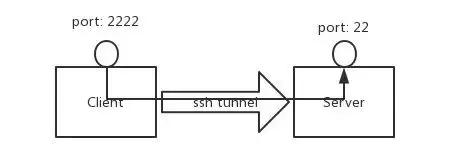
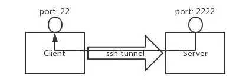
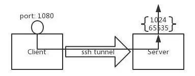
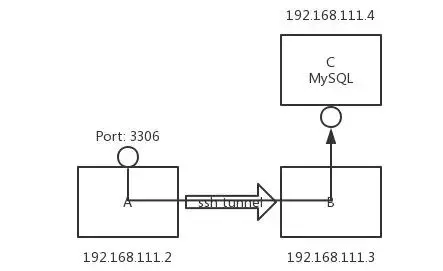
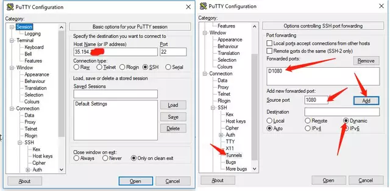
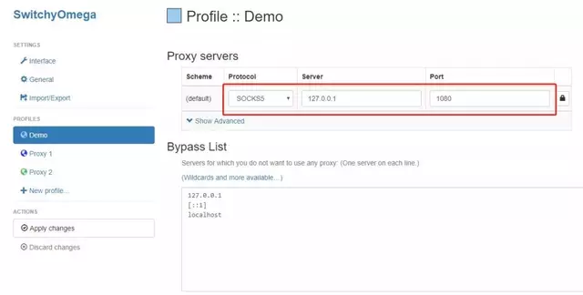

Jeff Wei分享站点
Jeff Wei分享站点用 SSH 搭建一个简单代理服务器
- Keywords: SSH, Tunnel, Proxy, SSH-Tunnel,
TOC
概述
问题：
- 所在网路因防火墙限制，导致一些协议、端口不能使用。
- 想用 VPN ，但配置太麻烦。
- 不通过 VPN ，想从公司访问家庭网络，或在家访问公司网络等。
如果你有遇到过上面的这些情况，本文会给你提供一种简单的解决方法。
SSH端口转发
SSH 端口转发是 SSH 提供的一种机制，通过 Server 和 Client 之间的加密连接中继其它端口的流量。因为连接是加密的，所以对于传输使用未加密协议（如IMAP、VNC或IRC）的信息非常有用。
端口转发分类
SSH 端口转发一般分为两类：
- 本地端口转发
- 远程端口转发
本地端口转发
本地端口转发的作用是把 Client 的某个端口的流量通过 SSH 连接转发到 Server ，如图1所示。

图1 本地端口转发
命令格式如下：
ssh -L <local port>:<remote host>:<remote port> <SSH hostname>
假设 Client 地址是 192.168.111.2，Server 地址是 192.168.111.3。在Client 端执行如下命令：
root@client $ ssh -L 2222:localhost:22 192.168.111.3
通过上面的命令连接上 Server 后，即实现了本地端口转发。只要在 Client 上连接本地的 2222 端口等同于连接 Server 的 22 端口，如下两条命令是等价的，均是连接 Server 的 22 端口：
root@client $ ssh 127.0.0.1 -p 2222
root@client $ ssh 192.168.111.3 -p 22
但是这儿有个问题，就是 Client 的 2222 端口是监听在 lo 接口上的，因此只有 Client 可以连接，为了让其他主机也可以连接 Client 的 2222 端口，上面的命令需要加一个 -g 参数。
root@client $ ssh -gL 2222:localhost:22 192.168.111.3
这样外部其他主机也可以连接 Client 的 2222 端口了。
远程端口转发
与本地端口转发相对应的是远程端口转发，其作用是把 Server 的某个端口的流量通过 SSH 连接转发到 Client ，如图2所示。

图2 远程端口转发
命令格式如下：
ssh -R <remote port>:<local host>:<local port> <SSH hostname>
Client 上执行如下命令：
root@client $ ssh -R 2222:localhost:22 192.168.111.3
连接 Server 后，远程端口转发生效。此时在 Server 上连接本地的 2222 端口等同于连接 Client 的 22 端口，如下两条命令是等价的，均是连接 Client 的 22 端口：
root@server $ ssh 127.0.0.1 -p 2222
root@server $ ssh 192.168.111.2 -p 22
与本地端口转发不同，远程端口转发不能通过设置 -g 选项使外部主机连接 Server 的 2222 端口。
动态端口转发
另外除了本地端口转发和远程端口转发外，还有一个更方便的动态端口转发。与本地端口转发和远程端口转发把流量转发到某个固定主机的固定端口不同，动态端口转发是根据数据包的目的IP和目的端口实现动态转发的，工作机制类似于代理，如图3所示。

图3 动态端口转发
命令格式如下：
ssh -D <local port> <SSH hostname>
Client 上执行如下命令：
root@client $ ssh -D 1080 192.168.111.3
为了让外部机器也可以连接，需要添加-g 参数：
root@client $ ssh -gD 1080 192.168.111.3
如此，发往 Client 1080 端口的数据包将通过 SSH 连接发往 Server ，并在 Server 上重新发起请求。
端口转发实践
经过上面对 SSH 端口转发的介绍，了解了其基本用法。接下来我们着手解决文章开始列出的那几个问题。
防火墙穿透
假设现在有 A、B、C 三台服务器，C 服务器提供 MySQL 服务，并且防火墙限制只信任来自 B 服务器的流量，其他任何主机均拒绝访问任何端口。有时为了测试需要临时从 A 访问，此时如果修改防火墙策略的话会有些麻烦，还需要测试完后恢复。如果用 SSH 本地端口转发的话，一条命令就解决了，当测试完成后断开此连接即可恢复，此情况如图4所示。

图4 本地端口转发实例
命令如下：
root@A ssh -gL 3306:192.168.111.4:3306 192.168.111.3 -p 22
现在即可通过连接 A 服务器的 3306 端口，访问 C 服务的MySQL 服务了。
简单的代理服务器
在你用公共 WiFi 上网时，指不定有什么人在窥探你的数据包。为了保护自己的隐私，VPN 是一个很好的选择，但 VPN 配置有点麻烦，对于一些新手来说有点难度。此时通过 SSH 动态端口转发可以实现和 VPN 类似的效果。
为了用此功能，你首先需要一台有公网 IP 的服务器及 SSH 登陆权限。
接下来就是客户端的配置，此处以 Windows 为例（需要 SSH 连接工具 Putty ），配置如图5所示。

图5 Putty 配置
配置好点 open ，输入账号密码登陆即可。现在一个简单的代理服务已经运行起来了。接下来是浏览器的配置，这里以 Chrome 为例，配置如图6所示。

图6 浏览器配置
这里我用到了一个很好用的 Chrome 插件 “SwitchyOmega”，用于设置浏览器的代理。用其他代理插件或 Windows 自带的代理设置也是同样的配置：
Proto: socks
Server: 127.0.0.1
Port: 1080
浏览器配置好后，在百度中搜索“IP”，即可看到我们的 IP 已经变成上面连接的那台服务器的地址了，如图7所示。
图7 代理测试
TODO
```shellscript
$ curl --socks5-hostname 127.0.0.1:1080 www.baidu.com
$ curl --socks5-hostname 127.0.0.1:1080 www.google.com
$ curl --socks5-hostname 127.0.0.1:1080 https://www.google.com
curl测试成功，Firefox可以通过Manual proxy configuration方式连接，Chrome可以通过插件 “Proxy SwitchyOmega”方式连接。但是Firefox和Chrome无法通过system proxy方式连接。
### 内网穿透
随着 IPv4 地址的枯竭，对于家庭用户而言很难获得一个公网 IP 地址，就我自己家的宽带来说，每次拨号只能获得一个私有 IP 地址。此时如果想在公司访问家庭网络的话，很难实现。
如果你有一台拥有公网 IP 的主机及 SSH 权限的话，上面的情况将迎刃而解。
由于远程端口转发的限制，需要做两次端口转发：一次远程端口转发把公网的 2221（因为绑定在 lo 上，所以只能本机访问） 端口转发到家庭主机的 22 端口，一次本地端口转发把公网的 2222 端口转发到 2221 端口，如图8所示。

图8 内网穿透
所需命令如下：
家庭主机上执行：
```shellscript
root@home $ ssh -R 2221:localhost:22 35.194.*.*
公网主机上执行：
root@public $ ssh -gL 2222:localhost:2221 localhost
此时准备工作已经完成。在任何 Internet 联通的地方，只要连接公网服务器的 2222 端口，即可登陆到家庭网络的主机上。
命令如下：
user@anywhere $ ssh -D 1080 35.194.*.* -p 2222
上面命令我们添加了动态端口转发参数。此时如果想访问家庭网络中其他主机上的资源的话，只要指定这个代理即可。
结束语
至此，我们已经完成了SSH 端口转发的简要介绍，并通过几个实例展示了其在工作生活中的应用。
Firefox
The recommended browser for this purpose is Firefox, because it can be configured to resolve DNS names through the SOCKS proxy, so the names of the websites you're browsing don't leak out through DNS queries.